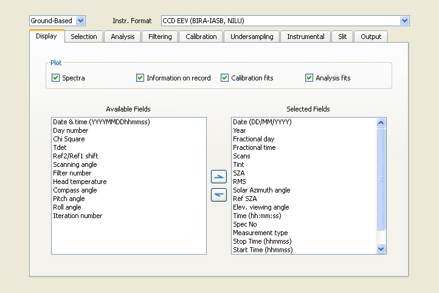

QDOAS Projects Properties : Display page

The analysis of spectra can be performed in a non-stop way. Disabling the plot of spectra and fits during the analysis makes the processing significatively faster although the use of the command line tool doas_cl is recommended in this case. Information on records depend on the display of spectra. If the Spectra button is unchecked, the state of the Data button has no effect.
Selection of fields to display
The content of this frame is similar to the one in the Output page. Information related to the measurements (e.g. date and time, viewing angles, geolocation coordinates, ...) can be selected in this page and will be completed with analysis results according to buttons checked in the Display frame of the Analysis windows properties dialog box. The user-defined instrument or file format determines the list of fields available for display or output. A non-exhaustive list of fields available for ground-based and satellite measurements is given in annex of the QDOAS Software User Manual.